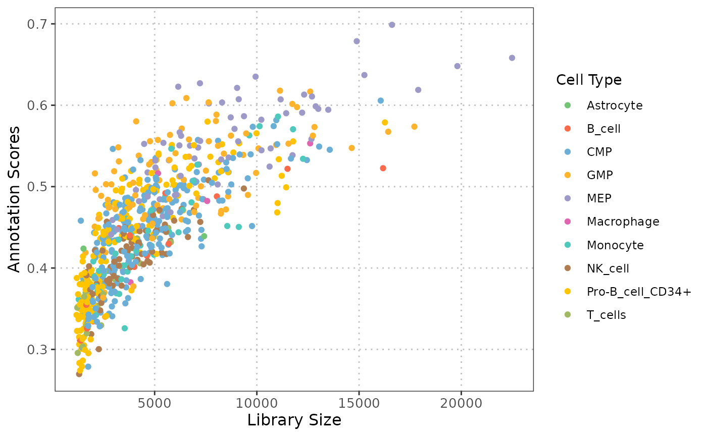

R/plotQCvsAnnotation.R
plotQCvsAnnotation.RdCreates a scatter plot to visualize the relationship between QC stats (e.g., library size) and cell type annotation scores for one or more cell types.
plotQCvsAnnotation(query_data, qc_col, label_col, score_col, label = NULL)A SingleCellExperiment containing the single-cell
expression data and metadata.
character. A column name in the colData of query_data that
contains the QC stats of interest.
character. The column name in the colData of query_data
that contains the cell type labels.
character. The column name in the colData of query_data that
contains the cell type annotation scores.
character. A vector of cell type labels to plot (e.g., c("T-cell", "B-cell")).
Defaults to NULL, which will include all the cells.
A ggplot object displaying a scatter plot of QC stats vs annotation scores, where each point represents a cell, color-coded by its cell type.
This function generates a scatter plot to explore the relationship between various quality control (QC) statistics, such as library size and mitochondrial percentage, and cell type annotation scores. By examining these relationships, users can assess whether specific QC metrics, systematically influence the confidence in cell type annotations, which is essential for ensuring reliable cell type annotation.
# \donttest{
library(celldex)
#>
#> Attaching package: 'celldex'
#> The following objects are masked from 'package:SingleR':
#>
#> BlueprintEncodeData, DatabaseImmuneCellExpressionData,
#> HumanPrimaryCellAtlasData, ImmGenData, MonacoImmuneData,
#> MouseRNAseqData, NovershternHematopoieticData
#> The following objects are masked from 'package:scRNAseq':
#>
#> fetchLatestVersion, fetchMetadata, listVersions
library(scater)
library(scran)
library(scRNAseq)
library(SingleR)
library(ggplot2)
# load reference dataset
ref_data <- fetchReference("hpca", "2024-02-26")
# Load query dataset (Bunis haematopoietic stem and progenitor cell data) from
# Bunis DG et al. (2021). Single-Cell Mapping of Progressive Fetal-to-Adult
# Transition in Human Naive T Cells Cell Rep. 34(1): 108573
query_data <- BunisHSPCData()
rownames(query_data) <- rowData(query_data)$Symbol
# Add QC metrics to query data
query_data <- addPerCellQCMetrics(query_data)
# Log transform query dataset
query_data <- logNormCounts(query_data)
# Run SingleR to predict cell types
pred <- SingleR(query_data, ref_data, labels = ref_data$label.main)
# Assign predicted labels to query data
colData(query_data)$pred.labels <- pred$labels
# Get annotation scores
scores <- apply(pred$scores, 1, max)
# Assign scores to query data
colData(query_data)$cell_scores <- scores
# Create a scatter plot between library size and annotation scores
p1 <- plotQCvsAnnotation(
query_data = query_data,
qc_col = "total",
label_col = "pred.labels",
score_col = "cell_scores",
label = NULL)
p1 + xlab("Library Size")

# }